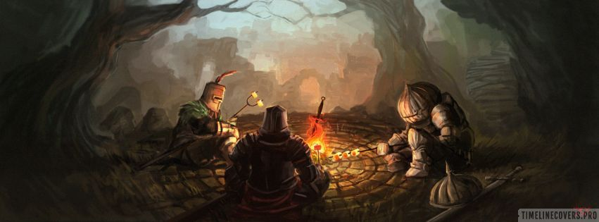
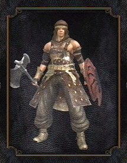
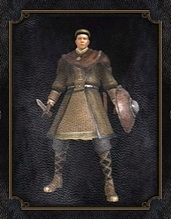
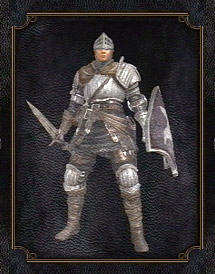
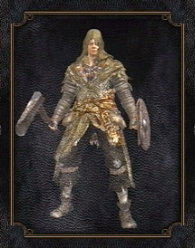
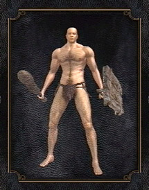
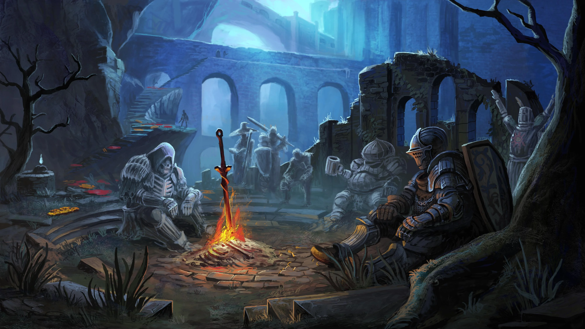
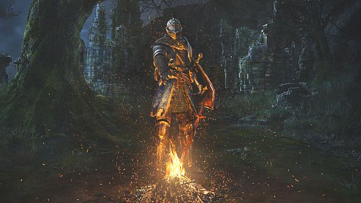

Combatente versátil, com bom equilíbrio entre ataque e defesa. Domina armas corpo a corpo e se adapta facilmente a diferentes situações de combate, sendo uma escolha sólida para iniciantes e veteranos.

Mestre das artes arcanas, utiliza magias poderosas à distância. Frágil fisicamente, mas devastador quando bem posicionado.

Guerreiro equilibrado, com alta defesa e domínio de combate corpo a corpo. Ideal para quem busca resistência e segurança nas batalhas.

Manipulador das chamas, combina magia e combate direto. Versátil e imprevisível, capaz de causar grande destruição.

Começa sem vantagens, armado apenas com o básico. Uma escolha desafiadora para quem busca superar limites e evoluir com dificuldade.
O mundo de Dark Souls se passa em Lordran, um reino antigo que já foi grandioso, mas agora está em ruínas. A história acontece em um cenário marcado pela decadência, onde castelos abandonados, florestas sombrias e criaturas corrompidas mostram que algo deu muito errado ao longo do tempo.
Tudo começou com a Primeira Chama, que trouxe luz, vida e também a desigualdade ao mundo. Com o passar dos anos, essa chama começou a enfraquecer, dando início a um ciclo de queda. Como consequência, surgiu a maldição dos mortos-vivos, fazendo com que humanos perdessem sua sanidade e vagassem sem propósito.
A ambientação do jogo transmite solidão e mistério, com pouca explicação direta. O jogador descobre a história aos poucos, explorando o mundo e interpretando pequenos detalhes. Isso torna a experiência mais imersiva e reforça a sensação de estar em um lugar esquecido, à beira do colapso.

